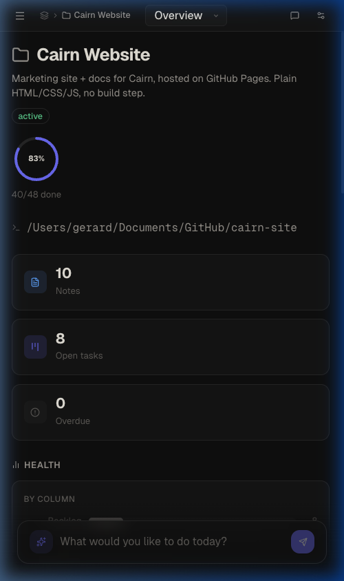

Mobile Companion
The Mobile Companion Service enables secure, local-network mobile access to your entire Cairn workspace from any phone or tablet without cloud lock-in.

Connection & Setup
The companion service streams the Cairn web application over your local Wi-Fi network directly from your running desktop application. Because everything stays local, no internet connection is required.
Starting the Service
- Open Cairn on your desktop and navigate to Settings → Mobile Access.
- Toggle the switch to **Enable Network Access**.
- A secure connection card will display:
- Your desktop's local server IP address and port.
- A scannable QR code encoding the server URL.
- A randomly generated 4-digit **Single-use Login PIN**.
Once you scan the QR code and input the correct 4-digit PIN on your device, the browser saves a secure cookie session mapped to `mobile-sessions.json` on your desktop. This session persists across application relaunches and updates, meaning you only need to re-authenticate if you explicitly log out or regenerate the PIN.
Mobile UI Adaptations
Cairn automatically detects a mobile screen width and adjusts the application's layout to prioritize reading comfort, navigation, and visual clarity.
- Slide-over Sidebar Drawer: The project/workspace sidebar collapses into a slide-over panel. Swipe from the left screen edge or tap the menu icon to trigger it. A backdrop blur overlay dims the main workspace, which can be tapped to dismiss the drawer.
- Responsive Notes Editor: On smaller viewports, the notes editor list panel slides out of view while editing to maximize space. Note titles and metadata wrap dynamically, and back buttons are nested next to note controls for easy single-tap navigation.
- Fullscreen AI Chat: The AI Chat assistant expands to cover `100vw` / `100dvh`, hiding manual layout resize handles so you have plenty of room to formulate prompts.
- Horizontal Settings Category Strip: Settings navigation scales into a horizontal swipeable strip so you can navigate panels without layout stretching.
- Tabbed Agent Workspace: Absolute multi-pane panels in the Developer Agent Workspace collapse into touch-friendly tabstrips (Terminal, Files, Editor, Diff, Console).
Touch Interaction Parity
To replace mouse hover and right-click states, the companion implements touch-specific sensor loops across the canvas and board components:
Kanban Board Drag-and-Drop
Standard touch scrolling on a board can accidentally trigger drag states. To resolve this, Cairn utilizes a dedicated touch drag sensor:
- Cards and columns require a **250ms press-and-hold** gesture before they can be dragged.
- A small **5px movement tolerance threshold** prevents accidental drags during vertical scrolling.
- Card and column handles include CSS `touch-action: none` to cede control to the HTML5 DnD layer immediately on hold.
Idea Flow Canvas Gestures
Interactive nodes on the Idea Flow canvas are adapted for reliable touch navigation:
- Long-Press Canvas: Pressing and holding on empty canvas space for **350ms** triggers the node picker at that exact touch coordinate, replacing the desktop right-click menu.
- Single-Tap Nodes: Tapping a node displays the Node Editor modal. Double-tapping is disabled on touch viewports due to latency.
- Minimap Autohide: The floating navigation minimap is automatically hidden on touch screens to maximize viewport estate.
- Multi-touch Pan & Zoom: Seamless one-finger pan and pinch-to-zoom gestures allow you to traverse huge flow layouts.
PDF Export & Sharing Sheets
Exporting note content to PDF from mobile clients bypasses system print dialogues where possible:
- Tapping **Export to PDF** on a note compiles the document and applies an inline responsive print stylesheet (`@media print`) that removes headers, toolbars, and scroll zones.
- The compiled document is served to the native **Web Share API** (if supported by your device browser like Safari or Chrome), prompting the native system share sheet immediately to send, print, or save.
- If the Web Share API is unsupported, the browser falls back to a standard local file download.
Automated Sync & Live Updates
The companion utilizes Server-Sent Events (SSE) and local database triggers to sync client-state instantly:
- Config Syncing: AI provider URLs, local LLM configurations, system endpoints, and API credentials are securely piped from the desktop configuration cache on load so you don't have to enter settings on mobile.
- Live Activity Updates: Any workspace modification (e.g., the AI coding agent editing a file, creating a card, or appending notes) broadcasts a `db:changed` packet. Connected mobile browsers refresh their visual board columns, notes, and dashboards instantly in real-time.